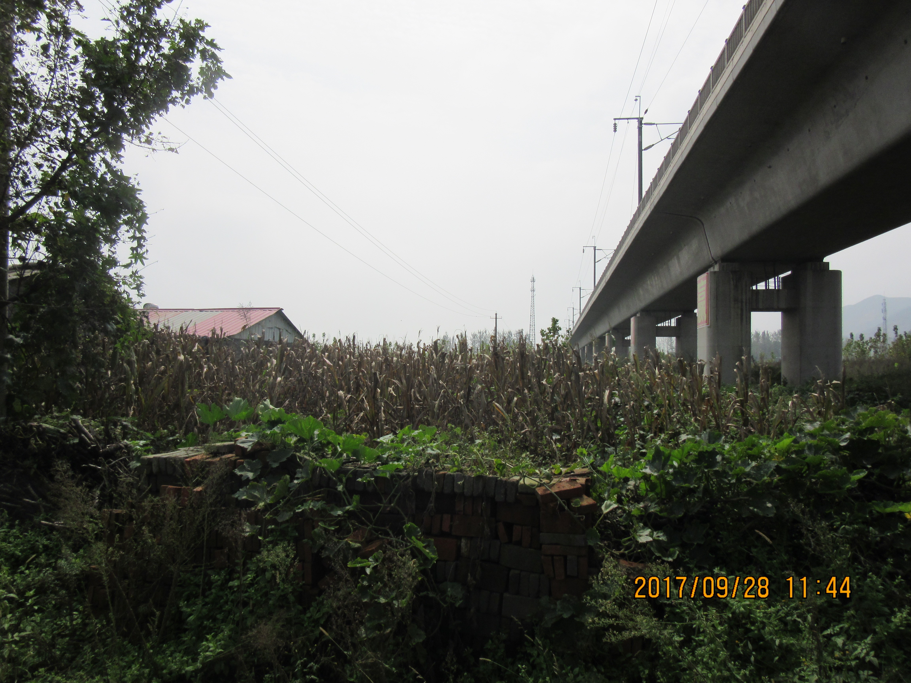
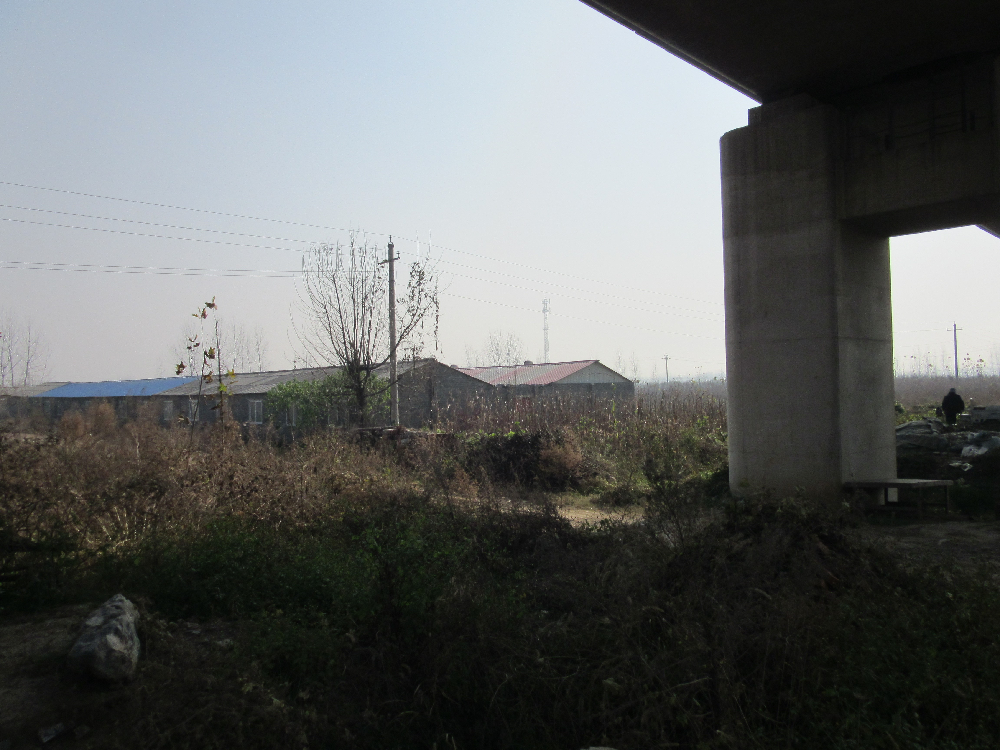
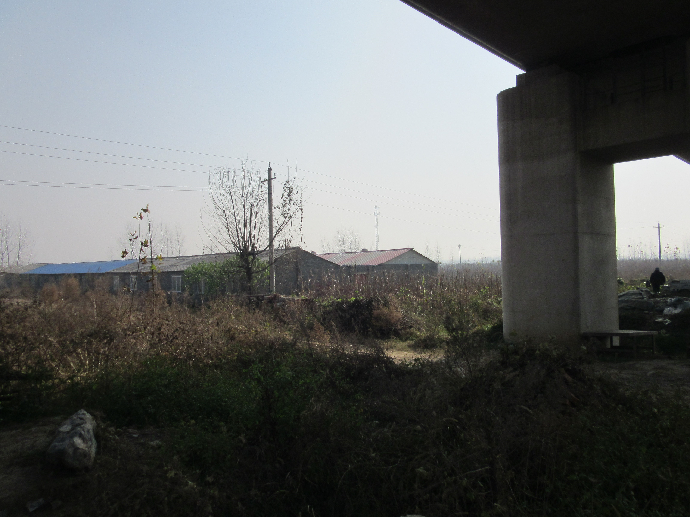
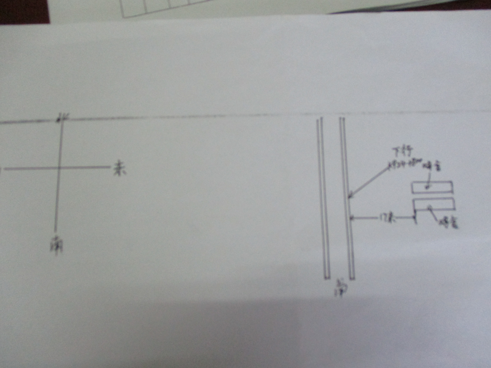

安保区014号隐患"一事一档一图"处置记录表
档案编号：014
建档时间：2017.08.28（驻马店西检测于2017年12月21日交于驻马店西路桥，此后由驻马店西路桥巡查）
| 地点 | 京广高铁k924+800 | ||
| 管辖车间、工区 | 驻西客专车间驻马店西检测工区 | ||
| 责任单位（施工单位、业主、归属地管理单位） | 业主单位：驻马店市确山县三里河乡北泉村 | ||
| 施工单位：无 | |||
| 归属地： | |||
| 责任人及联系方式 | 业主单位: | ||
| 施工单位: | |||
| 个 体:韩玉平、电话：15893952692 | |||
| 问题描述 | 问题描述 | 京广高铁k924+800下行东侧(彩钢瓦）有养鹅基地，距桥边缘17m | 
隐患照片 |
| 铁路安全保护区范围 | 该处铁路安全保护区为15米. | ||
| 风险评估 | 描述会对铁路造成什么样的安全隐患：刮大风时违章搭建彩钢瓦被吹到铁路上，造成影响行车安全的隐患 | ||
| 处置过程 |
1．2017年12月29日驻马店西路桥工区秦月华、马青检查至京广高铁k924+800，现场未有变化 2. 2018年1月30日驻马店西路桥工区职工刘稳平检查至京广高铁k924+800，现场未有变化 3. 2018年3月12日驻马店西路桥工区职工秦月华检查至京广高铁k924+800，现场未有变化 4. 2018年3月29日驻马店西路桥工区职工郝毅检查至京广高铁k924+800，现场未有变化 5. 2018年4月28日驻马店西路桥工区职工沈难选检查至京广高铁k924+800，现场未有变化 6. 2018年5月28日驻马店西路桥工区职工秦月华检查至京广高铁k924+800，现场未有变化 |
||
| 处置结案 | 附照片 | ||
| 后期情况 | 派工单、检查照片及现场有无变化情况说明 | ||
后附：处置过程记录资料
014号隐患问题处置过程资料说明：
 

现场示意图
隐患问题处置过程：
1、2017年12月29日驻马店西路桥工区秦月华、马青检查至京广高铁k924+800，现场未有变化
2、2018年1月30日驻马店西路桥工区刘稳平、沈难选检查至京广高铁k924+800，现场未有变化
3、2018年1月30日驻马店西路桥工区秦月华检查至京广高铁k924+800，现场未有变化
4、2018年3月29日驻马店西路桥工区职工郝毅检查至京广高铁k924+800，现场未有变化
5、2018年4月28日驻马店西路桥工区职工沈难选检查至京广高铁k924+800，现场未有变化
6、2018年5月28日驻马店西路桥工区职工秦月华检查至京广高铁k924+800，现场未有变化